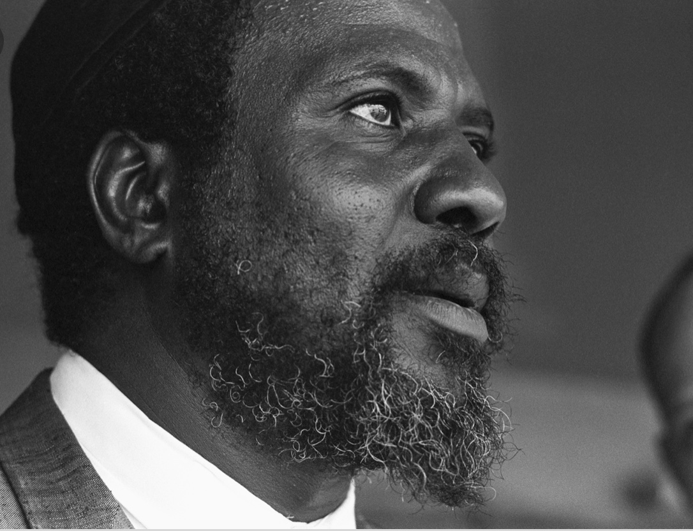
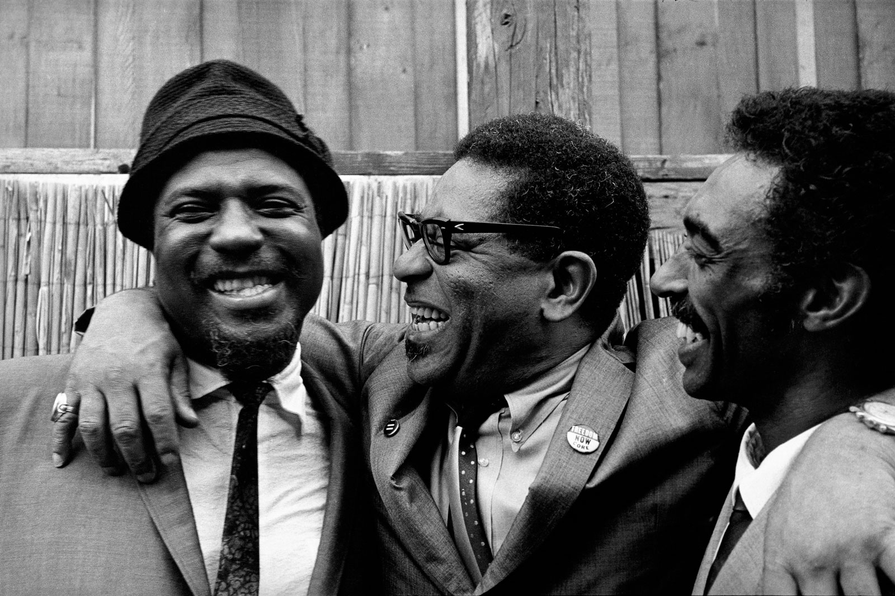

THELENIOUS MONK
A Sound Entirely His Own
Pianist. Composer. Innovator. Discover the music, life, and lasting influence of Thelonious Sphere Monk—one of the most original voices in modern jazz.
Monk helped shape the emerging language of modern jazz in the 1940s through his work at Minton's Playhouse. His unmistakable approach combined unexpected harmony, angular rhythm, silence, and a deep connection to jazz tradition.

REDISCOVER RECORDINGS
THELENIOUS MONK QUARTER - LIVE IN NEW YORK
Hear Monk captured live in New York with musicians including Charlie
Rouse, Ahmed Abdul-Malik, Roy Haynes, Frankie Dunlop, and Butch Warren.
Live in New York Vol. 1 documents the quartet at the Five Spot in 1958,
while Vol. 2 captures Monk at Birdland in 1963. The Monk Zone describes
these performances as previously unknown recordings, presented with
24-bit mastering.

MEET MONK
Thelonious Sphere Monk was born in 1917 and grew up in New York City, where he developed into a pianist and composer unlike anyone before him. His compositions—including “'Round Midnight,” “Epistrophy,” “Blue Monk,” “Straight, No Chaser,” and “Rhythm-a-Ning”—became lasting parts of the jazz repertoire.
About Thelonious Monk

THE STORY
From Minton's Playhouse to the Five Spot and the world stage, discover the life behind the music.

THE COMMUNITY
Connect with listeners, musicians, students, and fans who continue to celebrate Monk's work.